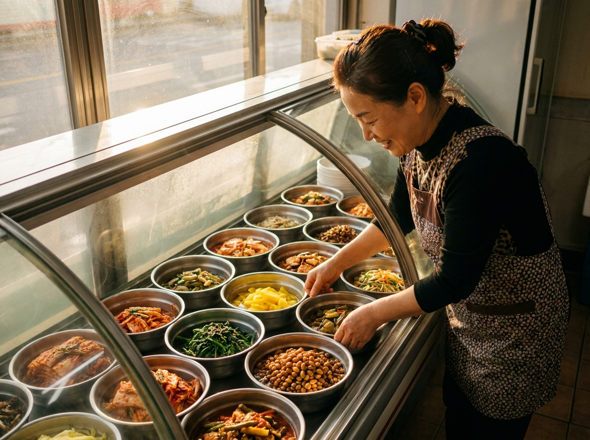
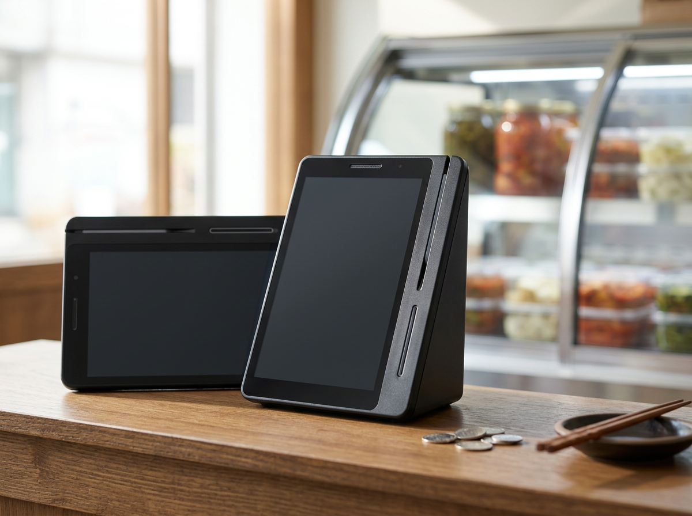

네이버페이 매출이 통장 금액과 달라 보이는 이유 (결제수단별로 정리하면 풀립니다)
결론부터 말씀드리면, 돈이 사라진 것이 아니라 들어오는 길이 서로 다를 뿐입니다. 카드, 간편결제, 네이버페이는 각각 정산되는 경로와 시점이 달라서, 오늘 판 금액과 오늘 통장에 찍힌 금액은 애초에 같을 수가 없습니다. 그래서 필요한 것은 계산기를 다시 두드리는 일이 아니라, 결제 수단별로 매출이 어디에 어떻게 쌓이는지 한 화면에서 볼 수 있게 정리해 두는 일입니다. 누리네트웍스는 수도권 매장을 직접 방문해 설치하고 관리하는 포스·결제단말 전문 업체입니다. 요즘은 소액 결제가 잦은 동네 가게일수록 이 질문을 많이 주십니다. 이 글에서는 결제 수단이 섞였을 때 매출을 어떻게 정리해 두어야 하는지, 그리고 네이버로 들어온 손님을 매장 결제까지 어떻게 이어받는지 정리했습니다.

결제 수단이 늘어난 만큼, 매출도 여러 갈래로 들어옵니다
동네 반찬가게를 예로 들어 보겠습니다. 오전에 진열을 마치고 문을 열면 단골 어머님이 나물 두어 가지를 사 가시고, 점심 무렵에는 반찬 몇 통을 한꺼번에 담아 가는 손님이 옵니다. 어떤 분은 카드를 내밀고, 어떤 분은 휴대폰 화면을 보여 주고, 어떤 분은 네이버페이로 계산합니다. 금액은 크지 않지만 건수는 하루 종일 쌓입니다.
문제는 마감 때 생깁니다. 오늘 판 금액은 분명 기억에 남아 있는데, 통장을 열어 보면 숫자가 맞지 않습니다. 어떤 금액은 이미 들어와 있고, 어떤 금액은 아직 들어오지 않았습니다. 여기서 많은 사장님이 "혹시 빠뜨린 결제가 있나" 하고 처음부터 다시 세기 시작합니다. 하지만 대부분의 경우 원인은 누락이 아니라 시차입니다.
결제 수단마다 돈이 움직이는 길이 다릅니다. 카드는 카드대로, 간편결제는 간편결제대로 정해진 절차를 거쳐 매장 계좌로 들어옵니다. 중간에 어떤 회사를 거치는지, 어떤 계약 조건인지에 따라 시점도 조금씩 달라집니다. 그러니 하루 매출을 통장 입금액과 곧바로 맞춰 보는 방식은 애초에 어긋날 수밖에 없습니다. 비교해야 할 것은 '판 금액과 들어온 금액'이 아니라, '결제 수단별로 판 금액과 그 수단의 정산 내역'입니다.
여기서 한 가지 분명히 말씀드릴 것이 있습니다. 정산 주기가 며칠인지, 어떤 비용이 얼마나 붙는지는 결제 수단과 계약 조건에 따라 다릅니다. 이 글에서 특정 숫자를 단정해 드리기 어려운 이유입니다. 정산 주기와 조건은 서비스 정책에 따라 달라질 수 있으니, 이용 중인 결제 서비스의 공식 안내를 직접 확인하시길 권합니다.
마감 전에 이것만 정리해 두면 헷갈리지 않습니다
복잡해 보여도 정리 기준은 단순합니다. 아래 항목을 한 번 정해 두면 매달 반복되는 혼란이 크게 줄어듭니다.
| 정리 항목 | 왜 필요한가요 |
|---|---|
| 결제 수단별 건수·금액 분리 | 카드·간편결제·네이버페이를 한 덩어리로 보지 않기 위해 |
| 수단별 정산 경로 확인 | 어느 계좌로, 어떤 이름으로 들어오는지 미리 파악 |
| 입금 내역과 매출 내역 대조 | 통장 총액이 아니라 수단별로 맞춰 보기 |
| 취소·환불 건 별도 표시 | 당일 매출과 정산액이 어긋나는 흔한 원인 |
| 한 화면에서 조회 가능 여부 | 여러 앱을 오가지 않고 확인할 수 있는지 |
이 가운데 실제로 시간을 가장 많이 잡아먹는 것은 마지막 항목입니다. 카드 매출은 이 앱에서, 간편결제는 저 화면에서, 네이버페이는 또 다른 곳에서 확인해야 한다면 마감 시간은 계속 늘어납니다. 반대로 결제를 한 대에서 받고 매출도 한곳에서 조회할 수 있으면, 수단별로 나뉜 숫자가 이미 정리된 형태로 남습니다. 정산이 어려운 게 아니라 흩어져 있는 것이 어려운 것입니다.
취소와 환불도 미리 표시해 두시길 권합니다. 반찬가게처럼 소액 결제가 잦은 곳은 잘못 계산해 취소하고 다시 결제하는 일이 종종 생깁니다. 이 건들이 표시 없이 섞이면 나중에 금액이 맞지 않는 이유를 찾느라 한참을 헤매게 됩니다.

검색으로 들어온 손님을 매장 결제까지 이어받는 구조
요즘 손님은 가게 앞에 서기 전에 먼저 검색부터 합니다. 동네 이름과 반찬을 함께 검색해 위치와 영업시간을 확인하고 나서야 발걸음을 옮깁니다. 그렇게 들어온 손님이 매장에서 결제까지 마치는 흐름이 끊기지 않게 하려면, 온라인에서 노출되는 창구와 매장 결제가 따로 놀지 않는 편이 좋습니다.
네이버단말기는 이 지점에서 쓰임이 분명한 기종입니다. 네이버 플레이스나 예약·스마트주문처럼 매장이 이미 쓰고 있는 창구와 연동되는 구성이고, 매장에서 네이버페이 결제와 적립을 그대로 받을 수 있습니다. 검색으로 가게를 찾은 손님이 매장에 와서 결제하고 적립까지 마치면, 그 손님은 다음에도 같은 경로로 돌아올 이유가 생깁니다. 단골에게 적립은 단순한 혜택이 아니라 재방문의 이유입니다. 포인트가 쌓이는 곳으로 다시 가는 것은 자연스러운 선택입니다.
매출 확인도 마찬가지입니다. 카드와 간편결제, 네이버페이 결제가 한 대에서 이뤄지면 마감 때 볼 화면도 줄어듭니다. 다만 어떤 서비스와 어디까지 연결되는지는 업종과 매장이 이미 쓰고 있는 서비스에 따라 달라지므로, 매장 상황을 알려 주시면 상담 시 안내해 드립니다. 시작 부담이 적다는 점도 소규모 매장에는 중요합니다. 네이버단말기는 월 0원·약정 없음으로 시작할 수 있어, 우선 써 보고 판단하기에 무리가 없습니다. 누리네트웍스는 정품 신제품 보증과 수도권 직영 설치·관리를 원칙으로 하며, 주문·결제·정산 올인원 구성으로 안내해 드립니다.
자주 묻는 질문(FAQ)
Q. 오늘 판 금액과 통장에 찍힌 금액이 왜 다른가요?
결제 수단마다 정산되는 경로와 시점이 다르기 때문입니다. 카드와 간편결제, 네이버페이가 각각 정해진 절차를 거쳐 들어오다 보니 하루 단위로는 어긋나 보일 수 있습니다. 다만 구체적인 정산 주기와 조건은 결제 수단과 계약에 따라 다르므로, 이용 중인 결제 서비스의 공식 안내를 확인하시길 권합니다.
Q. 결제 수단이 여러 개인데 매출을 한 번에 볼 수 있나요?
결제를 한 대에서 받으시면 매출 내역도 한곳에 모입니다. 수단별로 구분해 확인할 수 있어 마감 시간이 줄어듭니다. 조회 화면 구성은 이용하는 서비스에 따라 다를 수 있으니 상담 시 매장 상황에 맞게 안내해 드립니다.
Q. 네이버페이 적립이 단골 관리에 도움이 되나요?
손님 입장에서는 포인트가 쌓이는 곳을 다시 찾게 됩니다. 소액 결제가 잦은 매장일수록 반복 방문의 이유가 되기 쉽습니다. 다만 적립 조건과 비율은 서비스 정책에 따라 달라질 수 있으니 공식 안내를 확인해 주세요.
Q. 이미 네이버 플레이스를 쓰고 있는데 단말기만 바꾸면 되나요?
현재 쓰고 계신 서비스와 매장 운영 방식에 따라 필요한 구성이 달라집니다. 어떤 서비스를 이용 중이신지 알려 주시면 그에 맞는 최소 구성을 안내해 드립니다.
매출은 세는 게 아니라 보이게 하는 것입니다
장사가 끝난 뒤에 숫자를 맞추느라 시간을 쓰는 것만큼 아까운 일이 없습니다. 결제 수단이 늘어난 것은 손님에게 좋은 일이고, 사장님에게도 매출이 늘어날 기회입니다. 다만 그 매출이 어디에 어떻게 쌓이는지 한눈에 보이도록 정리해 두는 준비가 필요할 뿐입니다. 어떤 결제 수단을 주로 받으시는지, 네이버 관련 서비스를 이미 쓰고 계신지 말씀해 주시면 그에 맞는 구성을 함께 찾아 드리겠습니다. 수도권은 직접 방문해 설치하고 관리해 드리니 부담 없이 문의 주세요.
- 📞 전화상담 1544-7754
- 🌐 홈페이지 https://nwpos.co.kr

📷 인스타그램 팔로우 https://www.instagram.com/nurinetworkspos

▶️ 유튜브 구독 https://www.youtube.com/@nurinetworks